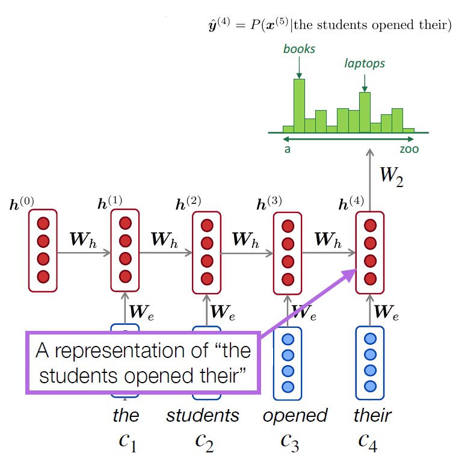
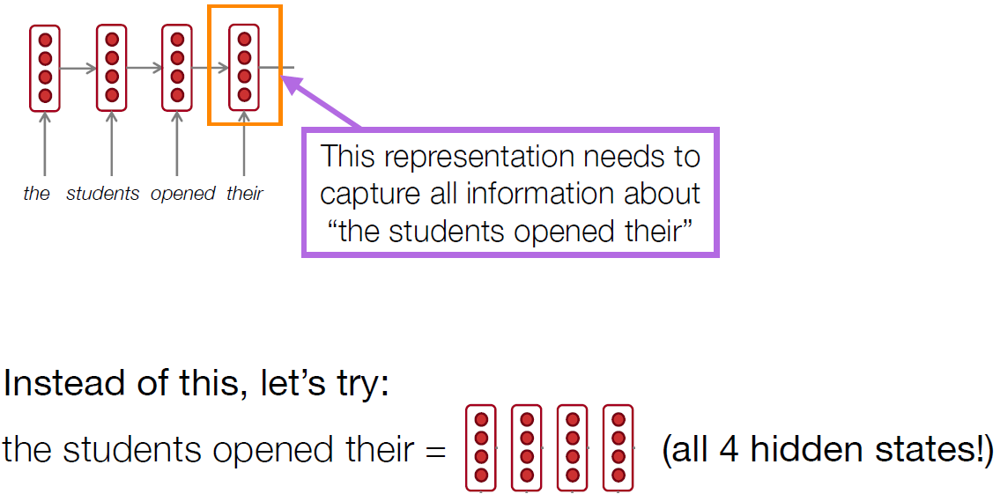
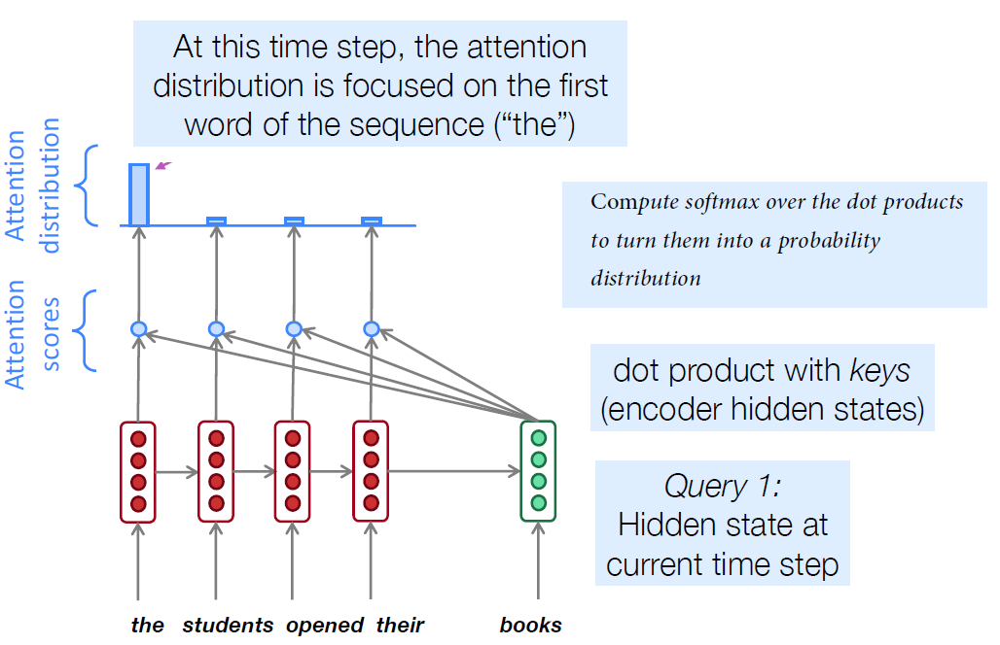
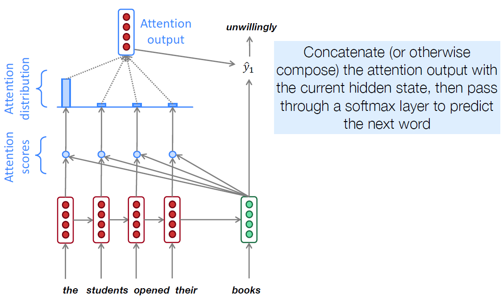
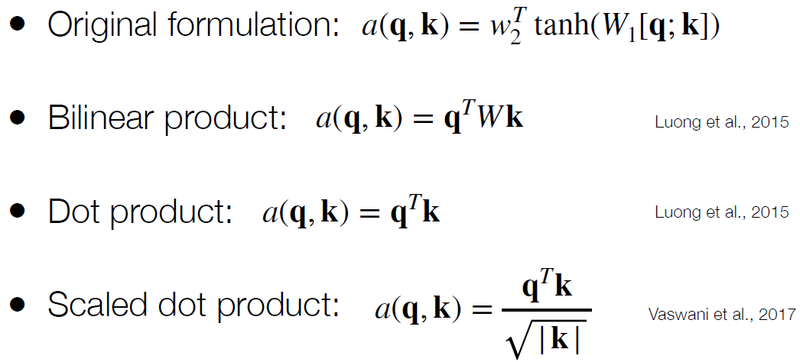
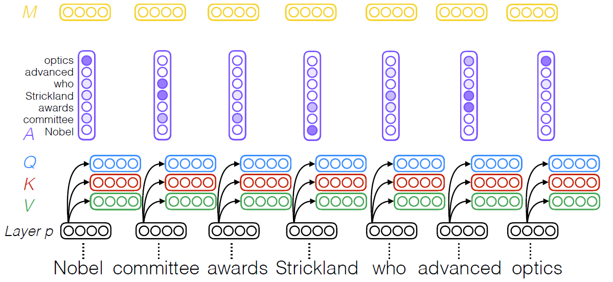
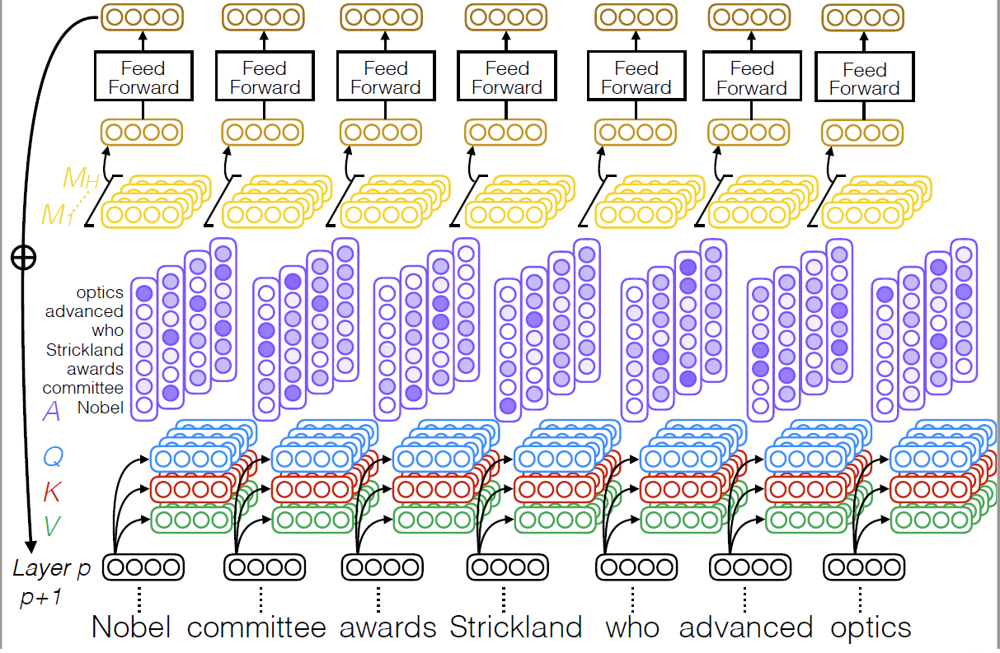

Attention mechanisms
Cons of RNN
RNNs suffer from a bottleneck problem: The current hidden representation must encode all of the information about the text observed so far
This becomes difficult especially with longer sequences (a vector to present whole sentence)

“you can’t cram the meaning of a whole %&@#&ing sentence into a single $*(&@ing vector!”
— Ray Mooney (NLP professor at UT Austin)
what if we use multiple vectors?

Attention
- Attention mechanisms (Bahdanau et al.,2015）allow language models to focus on a particular part of the observed context at each time step
- Originally developed for machine translation, and intuitively similar to word alignments between different languages
In general, we have a single query vector and multiple key vectors. We want to score each query-key pair


Attention solves the bottleneck problem
- Attention allows decoder to look directly at source; bypass bottleneck
Attention helps with vanishing gradient problem
- Provides shortcut to faraway states
Attention provides some interpretability
- By inspecting attention distribution, we can see
- what the decoder was focusing on
- We get alignment for free!
- This is cool because we never explicitly trained an alignment system
- The network just learned alignment by itself
Many variants of attention

Self-attention
can completely replace recurrence!
Each element in the sentence attends to the other elements

- 计算出相关性
- 计算出最后的embedding 如果有位置掩码P，则乘其值
Multi-head self-attention

寻求不同的相关性